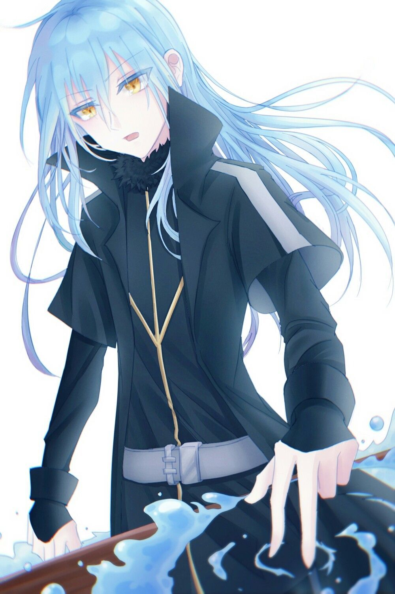

본작의 주인공. 베루도라의 동굴 내 마소 덩어리가 작은 차원의 균열 너머의 미카미 사토루의 혼과 링크되어 사토루의 의지에 따라 작성된 청백색의 슬라임. 일본이 아닌 이세계 기준으로도 최약체로 분류되는 마물이지만, 통상의 슬라임과 달리 이지적이고 유니크 스킬을 2개나 가지고 있는 특이한 슬라임.
본작의 주인공. 평범하게 대학을 나오고 대기업에 취직한 37세의 건장한 남성. 영어는 못 한다고 한다. 여자에게는 3번이나 고백했다가 모두 차였고, 부모님은 형이 부양하는 덕택에 마음대로 사는 독신귀족이다. 불고기를 좋아한다. 후배인 타무라의 염장질을 보다가 타무라를 찌르려던 괴한의 칼에 대신 찔리고 과다출혈로 사망. 후에 이세계에서 청백색의 슬라임, 리무루 템페스트로 전생하게 된다.

분명 마흔이 다 되어가는 나이지만 농담으로 첫 대면인 후배의 약혼자를 울리고서 '귀엽네'라고 속으로 생각하는가 하면 통곡하는 죽기 직전에 PC [8]의 처리 같은 걸 떠올리는 것이나 전생후 리무루가 억지부리는 태도를 보면 나이값을 못 하는 애 같은 성격. 실제로 리무루가 처음 인간화할 때 시즈가 모티브이면서도 시즈보다 어린 체형(정확히는 어른 시즈가 아닌 어린 시즈가 모티브)인 건 이게 리무루의 영혼과 정신연령에 최적화된 육체이기 때문(...).